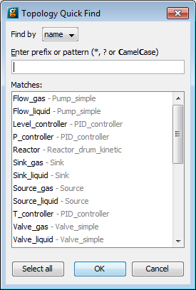

The appearance of connections on the Flowsheet can be customised using the Connection shortcut menu. As with the Unit short cut menu, the connection shortcut menu can be activated by left clicking on a connection to select it and then right clicking anywhere within the Flowsheets window.
The sections of the shortcut menu relevant to connections are:
The edit command launches a dialog that allows you to edit the connection properties. For a connection that links two Models with scalar Ports, the only property that can be modified is the connection name. For more complicated connections, the Connection details dialog also allows the index of any array Ports to be modified.
The connection name is subject to the same restrictions as other names in the gPROMS language (i.e. the same restrictions as names for Models, Parameters etc. - see Allowable entity names) is used to label and sort columns in stream tables.
On a second tab, , visual properties such as thickness or colour can be specified.
Selecting this option launches the Topology Quick Find Dialog, shown in the figure below. This dialog allows one to find (and select, if desired) a particular unit or connection by typing a search string into the box provided. All entities in the Topology whose name or type matches the search string will be listed at the bottom (if no string is entered then all entities are listed). The Find by listbox is used to specify whether the search lists the entity types or names matching the search string.
The search string may contain * characters, which will match any string, or ? characters, which
will match any single character. CamelCase allows you to search for words starting with the search letters, e.g., typing SL
as the search string would match the unit names Sink_liquid and Source_liquid; word boundaries are also given by capital letters, as in SourceLiquid.
Left clicking on one of the search results then selects that unit in the Topology. Multiple selections can be made by using the CTRL and SHIFT keys (individually or in combinations, as in Windows) or by pressing the Select all button to select all of the matching units.

The Straighten... menu item is used to make the selected connection a straight line; it is only available if straightening is possible, for instance if the orientation of the ports matches and the connection is not already straight. gPROMS will need to move one of the two Units attached to the connection in order to make it straight. The secondary menu lets you choose which of the units to move. In the example above, the secondary menu contains Move unit on the left and Move unit on the right. For vertical connections, the menu items are Move unit at the top and Move unit at the bottom.
When two Units are connected together, gPROMS FormulatedProducts uses an algorithm to determine the best line routing between them using a number of straight-line segments, typically 1 to 3. These arrangements can be overridden by adding or removing line segments. If you want to add more line segments to the connection, place the mouse pointer where you want the connection to be rerouted, right click to enable the shortcut menu and select Add line segment. gPROMS FormulatedProducts will then add extra line segments to route the connection via that position on the Flowsheet. The connection can be further customised by left-dragging the handles on the lines, in a similar manner to resizing objects.
This function may only be performed on a single connection, and is therefore greyed out if more than one connection is selected.
Connections between Units can also be simplified by removing line segments. Right click on the part of the selected connection that needs to be removed and select Remove line segment. gPROMS FormulatedProducts will then remove nearby line segments to give a more direct connection between the two Units.
This function may only be performed on a single connection, and is therefore greyed out if more than one connection is selected.
Of the commands in the standard Edit menu, only Delete has any relevance to connections. The Cut, Copy and Paste commands are all disabled. The selected connection(s) can be deleted either by left clicking on Delete or by pressing the Delete key.